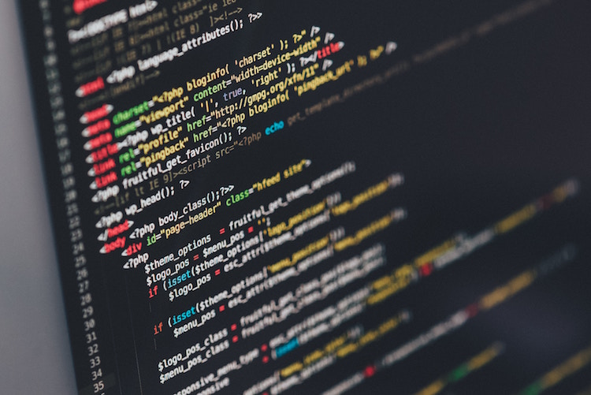

Nick's Website

Highschool
My number 1 highschool I would like to go to is Millikan High School. I am most interested in this school because of the QUEST program and they also have very good sports. It seems to be a very well rounded school that I would have a good time going to because of academics, sports, and also the fact that a lot of my friends are going there or go there now.
Hobbies
I am still deciding what College I want to go to because there's one here on the West Coast but also one on the East Coast. The one on the West Coast is CalTech because I am very interested in Technology, and the other is MIT because it also has to do with technology.

Interests
I am interested in quite a few things, Math and Science are two of them. I have always liked these subjects since I thought they were easy to understand and also fun to do. I also like learning some history about the U.S.A. and wars that have happened and why they ha happend. Most importantly I love to use computers and phones or anything else that is a technology that I can use. There are millions of things to do with technology and coding is only one of them and I would love to learn a lot more than I already know.
Family
I was born in the year of 2003 and and I have lived with my Mom my whole entire life. I have to brothers that are both younger than myself but I don't get to see them much since they live in the state of Texas. My dad has been all over the place starting in California, moving to Texas, then moving back to California, then he left to live in Kansas for a little bit and finally coming back to California so I can see him more often.